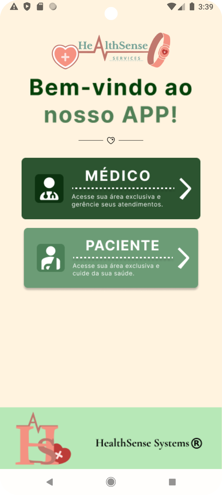
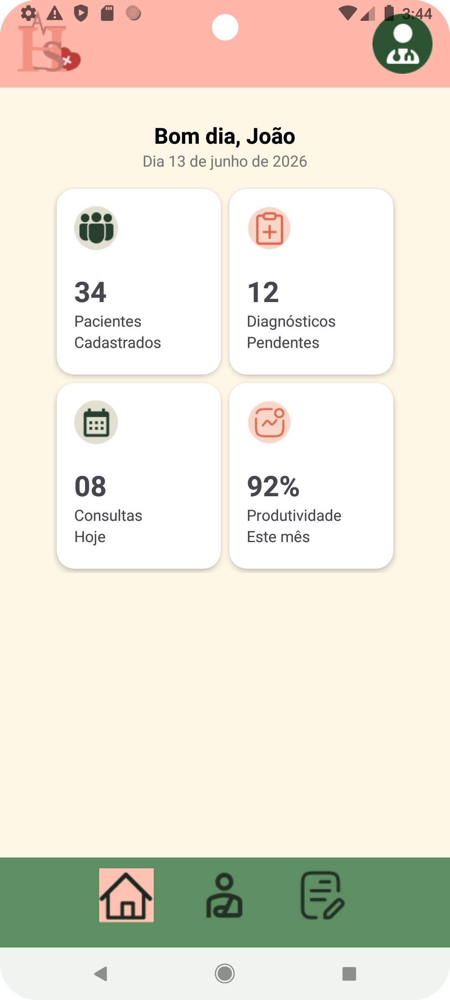
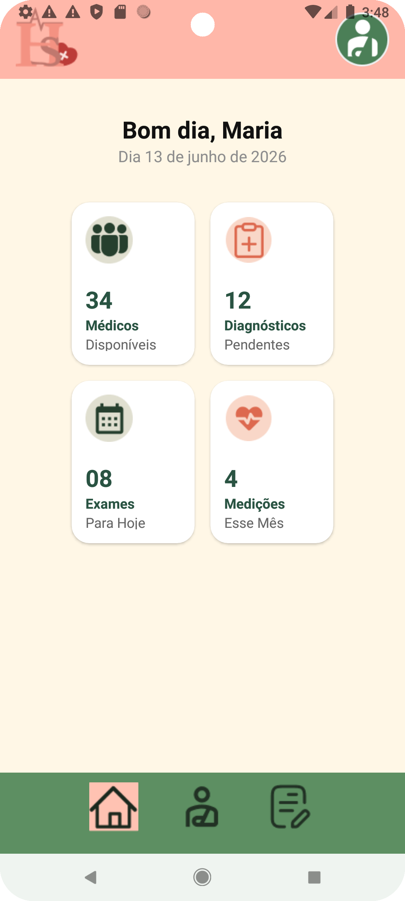

Sobre o nosso projeto
Nosso projeto é sobre uma pulseira inteligente capaz de monitorar os sinais vitais do paciente com um aplicativo que relata o diagnóstico dele para os profissionais de saúde com antecedência e, se houver alguma instabilidade, alerta todos os responsáveis técnicos do setor. O app será apenas disponibilizado para as empresas hospitalares (públicas) sobre um contrato, e será instalado pelos técnicos enviados pela empresa para instalar o programa em todo sistema do hospital. Assim conectando o sistema de banco de dados do hospital ao aplicativo para evitar, ao máximo, falhas de atraso ou extravio de dados sobre os pacientes, esse app terá um alarme e monitoramento de pacientes e, quando há alguma ocorrência, o app congela em uma tela de emergência e só retornará automaticamente ao seu modo tradicional quando o paciente for estabilizado.
Prints do nosso APP:



A Nossa História
A principal motivação inicial por trás do nosso projeto de TCC para a Escola Técnica Estadual Lauro Gomes foi o aprimoramento de qualidade dos atendimentos médicos no Brasil, especialmente em hospitais públicos.


O Nosso Propósito
Nosso principal propósito é contruibuir com as ODS a fim de tornar o mundo um logar melhor, transformar os hospitais públicos com tecnologia custo-benefício e aplicações reais em momentos requeridos.


Nossa Equipe
Para desenvolver esse projeto foi necessário o apoio de muitas pessoas, das quais, a equipe principal do projeto "Health Sense".
Veja o nosso produto
Modelo 3D gerado na ferramenta "MESHY AI".
Dúvidas Frequentes
O que é o nosso projeto?
É uma pulseira que mede batimentos cardíacos a partir da corrente sanguínea.
A que instuições ele é destinado?
A instituições públicas de saúde.
Quanto custa o produto?
Nos não temos o produto finalizado, então ainda não temos um valor definido.
Existem riscos embutidos ao paciente que utilizar a pulseira?
Não, em sua versão final a pulseira será totalmente anti-alergênica e atóxica.
Como o médico utilizará a pulseira?
Não, em sua versão final a pulseira será totalmente anti-alergênica e atóxica.
Em caso de parada cardíaca, o médico responsável pelo paciente é avisado?
Sim, por meio de alertas visuais e sonoros no aplicativo.